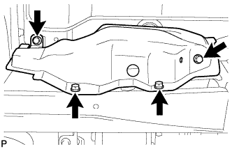
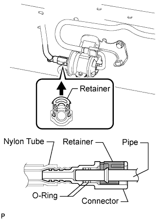
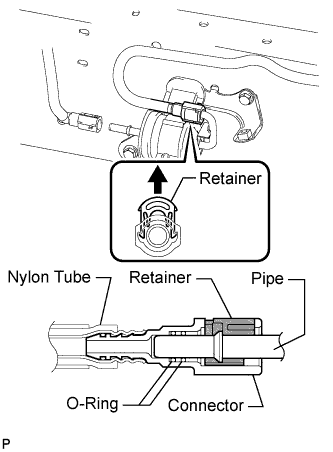
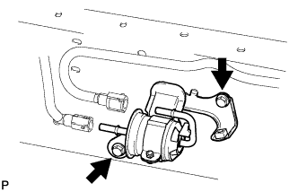
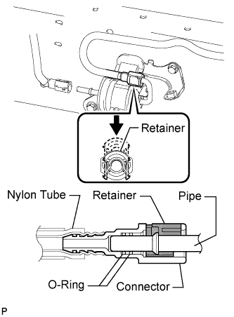
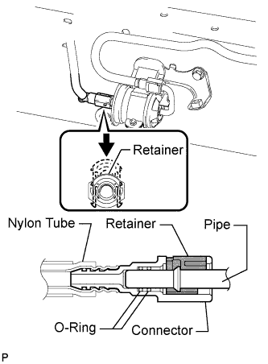

FUEL FILTER > REPLACEMENT |
| 1. DISCHARGE FUEL SYSTEM PRESSURE |
Discharge the fuel system pressure (Click here).
| 2. DISCONNECT CABLE FROM NEGATIVE BATTERY TERMINAL |
| 3. REMOVE NO. 1 FUEL TUBE PROTECTOR |
 |
Remove the 4 bolts and No. 1 fuel tube protector.
| 4. DISCONNECT NO. 2 FUEL MAIN TUBE SUB-ASSEMBLY |
 |
Pull up the retainer and disconnect the No. 2 fuel main tube.
| 5. DISCONNECT FUEL MAIN TUBE |
 |
Pull up the retainer and disconnect the fuel main tube.
| 6. REMOVE FUEL FILTER ASSEMBLY |
 |
Remove the 2 bolts and fuel filter.
| 7. INSTALL FUEL FILTER ASSEMBLY |
Install the fuel filter with the 2 bolts.
| 8. CONNECT FUEL MAIN TUBE |
 |
Connect the fuel main tube and push the retainer.
| 9. CONNECT NO. 2 FUEL MAIN TUBE SUB-ASSEMBLY |
 |
Connect the No. 2 fuel main tube and push the retainer.
| 10. CONNECT CABLE TO NEGATIVE BATTERY TERMINAL |
| 11. INSPECT FOR FUEL LEAK |
Connect the intelligent tester to the DLC3.
Turn the engine switch on (IG) and intelligent tester ON.
Enter the following menus: Powertrain / Engine and ECT / Active Test / Activate the Fuel Pump Speed Control.
Check that there are no fuel leaks after doing maintenance anywhere on the fuel system.
| 12. INSTALL NO. 1 FUEL TUBE PROTECTOR |
Install the No. 1 fuel tube protector with the 4 bolts.